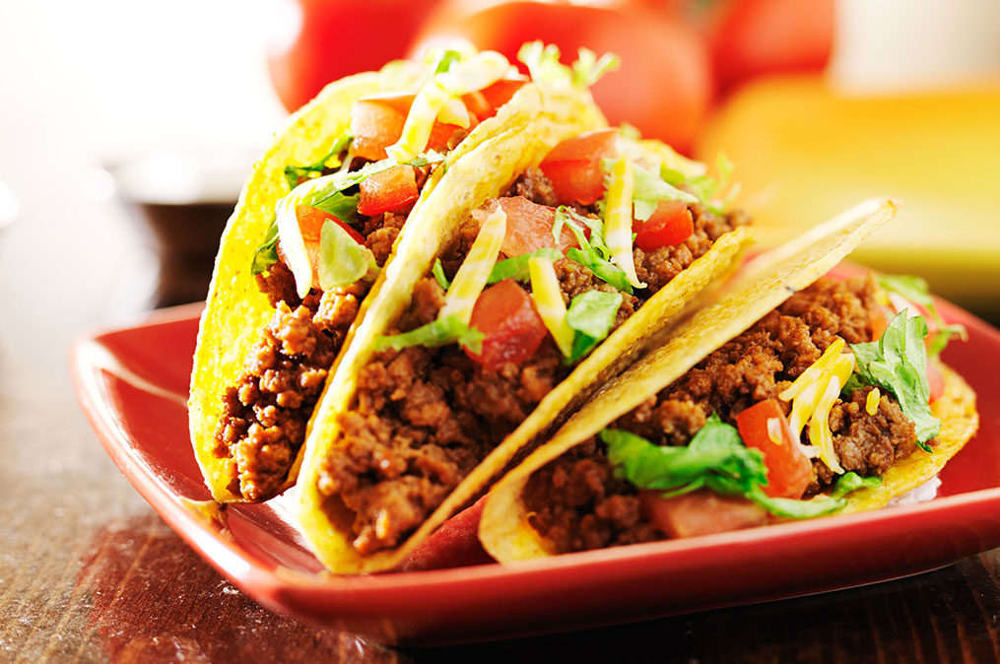

The Easiest Taco Recipe
The Easiest Taco You've Ever Made
Do you loathe cooking dinner? Does cooking take up too much of your lazy, post-work TV time?
So much so that you would rather starve than force your body to slide off the couch and slither into the kitchen?
Boy, do I have the recipe for you!
This taco recipe literally takes 20 minutes. Total. You're welcome.
Here we go
Be an adult and go to your nearest grocery store and buy these things.
We both know you don't have this stuff in your fridge already.
- 2lbs ground beef
- 1 can tomato soup
- 12 taco shells (warm 'em up in the oven)(or don't, I'm not your mom)
- shredded lettuce
- shredded cheese (Cheddar is the best choice, obviously, but you do you)
- Hot sauce
Slap on your apron and don't burn yourself while you do the following:
- Brown the beef in a skillet over medium-high heat, stir the whole time to separate the meat. Season to taste.
- Drain the fat and dispose of it properly so you don't clog up your sink drain (you're welcome).
- Add the soup to the beef, stir and heat to a boil, then reduce heat to low and cook until soup is reduced. (Please stir it.)
- Divide this mixture among the taco shells.
- Top with cheese, lettuce, and hot sauce.
- Eat all 12 tacos by yourself in front of the TV because that's the point of all of this.

God, I love tacos.